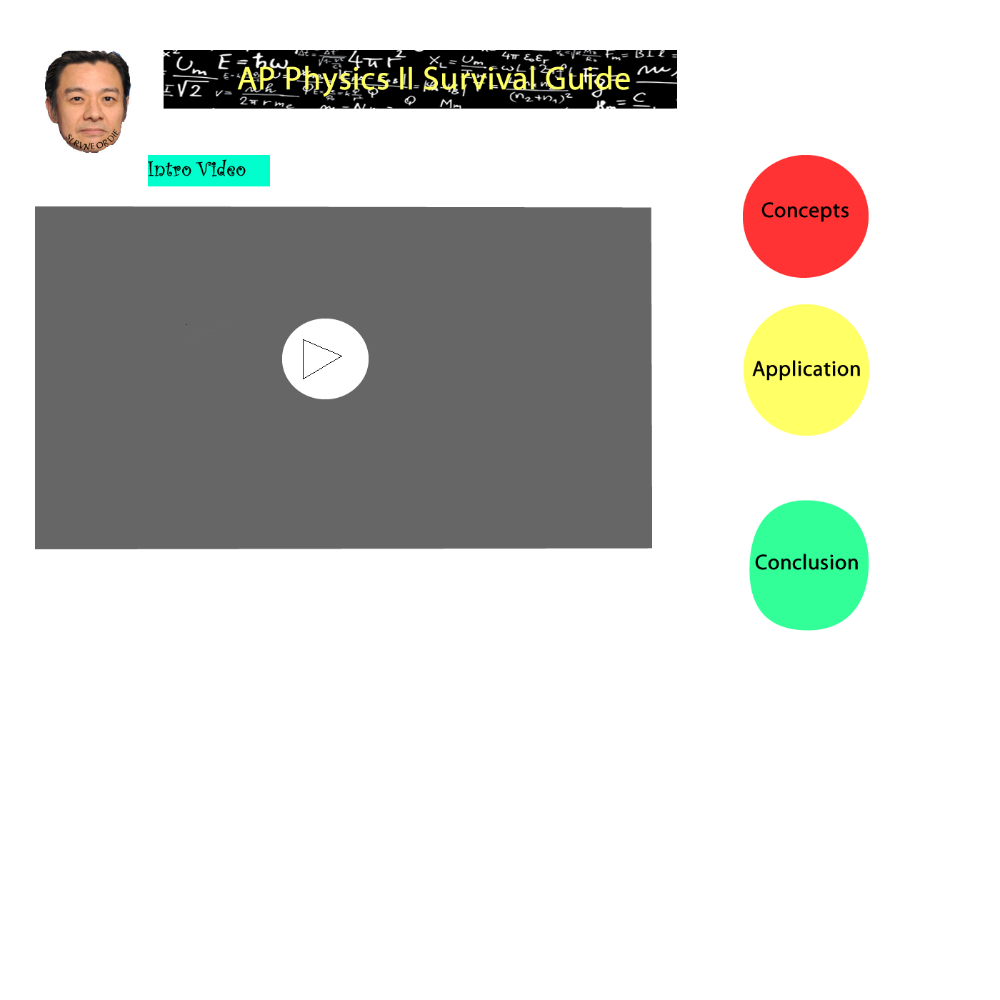

- Custom Search Bar
- Call to Action Contact Form
- Navigational Bar
- 2-3 Featured Properties
- 4 Main topics
- Online Quizzes
- Tutorials and Videos
- Countdown to Midterm Exam
Proposal Ideas
Client: Mr. Lo, so that he has a convenient platform on which he can place instructional videos and quizzes for students to practice for the midterm.
Description: This will be a website (one similar to physicsclassroom) in which Mr. Lo teaching materials can be posted on for the four different topics. It will also include online quizzes for the four topics so that student can practice on for the midterm.
Objectives/Audience:
Progress
- Set up Trello to track progress
- Contains "Problems/Stories"
- Contains "Working on"
- Contains "Done"
- Contains "Extra Information"
- Current tasks to perform
- Setting up meeting with Mr. Lo
- Rethinking and replanning the orginal idea using Mr. Lo's view
- Flowchart 1
- Flowchart 2
- Flowchart 3
- Meeting with Mr. Lo Complete
- Wants it to be interactive
- Wants us to create a creative video as an intro
- 3 Subpages: Concepts, Application, Conclusion
- One Topic: Kinematics
- Flowchart complete
- Changed the flowchart to a very basic layout
- Made it organized and simple to work with
- Approved by Mr. Lo
- Made our Wireframe for Homepage
- Created my wireframe
- Voted Miffy's layout as the best
- Created it in fireworks
- Chose to include logo, video, description, and subpage links
- Storyboard
- Everyone creates their own storyboard and then we compare
- Storyboard Rough Draft 1 
- Second Meeting with Client
- ...